线代习题选#
目录#
1.5 37#
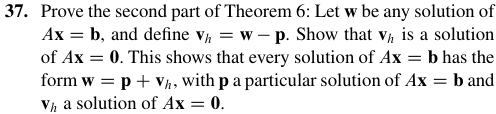
其中 Theorem 6 指的是：
Solution:
1.7 42#
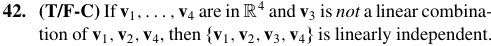
Counterexample:
1.8 27#
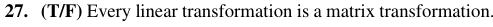
这个很有意思的是反例不大好找。如果你只是想一些简单的变换是无济于事的。但是 求导 也是线性变换。
1.8 38#
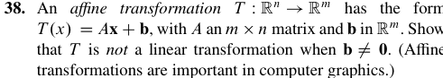
证明是简单的。我们可以继续下来探讨一下仿射变换(affine transformation).
它应该也可以拥有一个这样的形式：
当然，也许 A 的值域并非 \(ℝ^m\)，所以上面的形式并不完备。
加 \(\vec{b}\) 的行为可以看成是将原来线性变换的结果做了一个平移，事实上也没有改变原来的形状，只是位置发生了变化。
1.9 41#
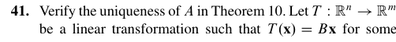
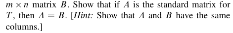
证明其实非常简单。
要让这个式子恒成立，显然 \(A = B\)。
2.1 T11#
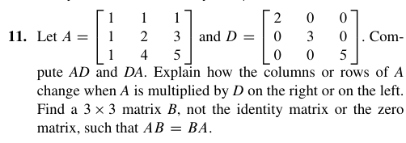
主要是第二个问题。也就是找到一个 \(B\) 矩阵。一个显然的答案是 \(\alpha I_{3}\)，但是我们也可以去求矩阵的逆。
这个求法当然有公式，但是也有一个比较好的想法。就是当我做行简化的时候，（对于方阵）我最后也会得到一个单位矩阵。 那么相当于 \(BA=I\)，要求 \(B\) 的话，我们只需要对 \(I\) 做相同的操作就 OK 了。
对于这道题，我最后化简到的结果是：
也是可行的。
2.1 T30~T34#
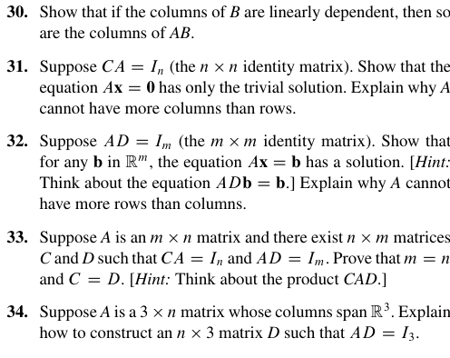
30 这是一个很有意思的性质。也就是矩阵变换不改变原矩阵各列的线性相关（当然并没有提出如果原矩阵线性无关会怎么样）。证明也很简单，因为如果 B 的各列是线性相关的，某个列向量就一定能写成其它列向量的线性组合，而这个线性组合整体被 A 作用一下仍然成立，这就结束了。
这样我们也就很自然地有了 31 的证明。也就是如果有非平凡解，那么 A 的各列线性相关 见 1.7线性无关 的这里，这样我们就不可能得到一个各列向量线性无关的单位矩阵 \(I_{n}\)。那既然都线性无关了，那 A 也就不可能列比行多了。
而 32 则更进一步。它的证明（在提示下）是简单的。显然 \(D\) 得是一个 \(m\) 列的矩阵，那它与 \(\mathbf{b}\) 的乘积就是有定义的。我们只要让 \(\mathbf{x}=D\mathbf{b}\) 就得到了答案。那显然对任意的 \(\mathbf{b}\inℝ^m\) 都是有解的嘛。但是这样就要求 \(A\) 的各列张开 \(ℝ^m\)，这显然需要让 \(A\) 有大于等于 \(m\) 列。这就很轻松地说明了这个题。
把 \(31,32\) 放在一起看，我们不难发现：如果同时有 \(CA=I_{n}\) 和 \(AD=I_{m}\)， A 只能为方阵，且一旦 A 确定下来，\(C\) 和 \(D\)就是确定的，而且 \(C=D\)。这就是我们的 33 题。
不过，存在 \(CA=I_{n}\) 不意味着存在 \(AD=I_{m}\)。这就是 34 题可以告诉我们的。这个找法可以是：分别找到 \(A\mathbf{x}=\begin{bmatrix}1 \\ 0 \\ 0\end{bmatrix},\begin{bmatrix}0 \\ 1 \\ 0\end{bmatrix},\begin{bmatrix}0 \\ 0 \\ 1\end{bmatrix}\) 的解 \(\mathbf{x_{1},x_{2},x_{3}}\)，然后 \(D=\begin{bmatrix}\mathbf{x_{1}} & \mathbf{x_{2}} & \mathbf{x_{3}}\end{bmatrix}\)。
也可以是其它方法。详见2.1 T34补充
2.1 T35-36#
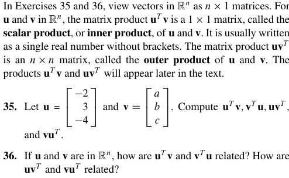
这里引入了内积（标积）和外积的概念。
内积是 \(1\times n\) 和 \(n\times 1\) 的乘法，最后当然得到一个数。
外积是 \(n\times 1\) 和 \(1 \times n\) 的乘法，最后会得到一个 \(n \times n\) 的矩阵。
分别可以写成\(\mathbf{u^T v}\)和\(\mathbf{uv^T}\)
它们也会在后面出现。这里先看一个比较简单的性质。那就是 \(\mathbf{u^T v}=\mathbf{v^T u}\)。这很显然，因为本来是转置的，但是 \(1 \times 1\) 的矩阵转置不就是自身吗？所以就相等了。
2.1 T41#
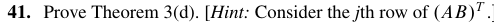
2.1 T47#
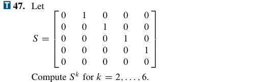
这是一个所谓的 上移位矩阵，或者叫 幂零矩阵。
这是 T47，矩阵 \(S\) 是一个典型的上移位矩阵（或称为超对角移位矩阵）。它的规律非常漂亮：随着乘方次数增加，非零元素会不断向右上方“移动”，最终移出矩阵，全部变成 0。
NumPy 验证代码#
import numpy as np
# 构造 5x5 的上移位矩阵 S
S = np.diag([1, 1, 1, 1], k=1)
for k in range(2, 7):
print(f"S^{k} = \n{np.linalg.matrix_power(S, k)}\n")输出结果#
关键结论#
- \(S^2\) 到 \(S^4\)：每乘一次 \(S\)，非零的 \(1\) 就向右上方移动一个位置。
- \(S^5\)：\(1\) 全部移出矩阵，变成 \(5 \times 5\) 的零矩阵。
- \(S^6\)：零矩阵乘任何矩阵都是零矩阵，所以结果依然是全零矩阵。
这种矩阵在数学上叫幂零矩阵（nilpotent matrix）。\(S\) 的幂零指数是 \(5\)，即最小使得 \(S^k = 0\) 的 \(k\) 为 \(5\)。
2.1 T48#
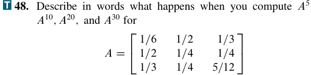
这是一个双随机矩阵。它每一个元素都大于 0，因此是 不可约 的且 非周期 的。我们有一个结论，就是这样的矩阵做足够多次幂运算后会收敛到一个特定的矩阵。在这里就是全为 \(\frac{1}{3}\) 的矩阵。
import numpy as np
A = np.array([
[1/6, 1/2, 1/3],
[1/2, 1/4, 1/4],
[1/3, 1/4, 5/12]
])
for k in [5, 10, 20, 30]:
print(f"A^{k} =\n{np.linalg.matrix_power(A, k)}\n")输出中会看到 \(A^{20}\) 和 \(A^{30}\) 已经非常接近 \(1/3\)。
2.2 T23#
乍一看这个好像和我们 2.1 给的一个 Warning 矛盾了。这个 warning 里说：
消去律对矩阵乘法不成立。
可是不对啊，我们这道题里为什么就成立了呢？这是因为矩阵 A 可逆。这样我们就可以两边左乘 A 的逆了。
但是还是要注意，如果这道题不是 \(AB=AC\) 而是 \(AB=CA\)，我们就不能消去 A 了，我们尝试左乘 A 的逆，会得到 \(B=A^{-1}CA\)，要想得到 \(B=C\)，我们需要 A，C 对易这个性质。而只从感觉上来说，相比对易，可逆是一个更容易得到的性质。
2.2 T33-34#
我们事实上只需要利用前面的定理就可以完成证明。
\(A\mathbf{x}=\mathbf{0}\) 只有唯一解，根据 Chapter 01 Summary#Theorem 11 知道这意味着 A 是一个单射，根据 Chapter 01 Summary#Theorem 12 就可以知道 A 的各列线性无关，于是我们就可以由这个继续推出每一个在 \(ℝ^{n}\) 上的 \(\mathbf{b}\) 都是矩阵 \(A\) 的列的线性组合，这样我们就可以继续由 Chapter 01 Summary#Theorem 4 推出 A 在每一行都有一个 pivot position，这和 A 有 n 个 pivot column 是一个意思，和 A 与 \(I_{n}\) 行等价也是一个意思。这样就证完了。
\(A\mathbf{x}\) 是一个满射，这事实上又意味着我们可以通过 Chapter 01 Summary#Theorem 4 得到和上一题一样的结论。
2.4 T 17-18，20-22#
这几道题有一个统一的主题，就是所谓的 Schur Complement。
当然，我们这里其实没有给一个，至少在我看来，很完备的定义。我们其实只针对 \(2 \times 2\) 的分块矩阵给出了对角线 entry 的 Schur Complement 的定义。
它首先要求这个对角元素是可逆的，但也只限于此。其它三个元素的形式完全没有要求。
然后我们其实是把一个矩阵拆成了三个分块矩阵的乘积。先是一个下三角，再是一个对角矩阵，最后是一个上三角矩阵。
求解 \(X，Y\) 其实并不难。我们简单地做一下矩阵乘法马上就可以得到：
最后一个 \(S\) 就是所谓的 \(A_{11}\) 的 Schur Complement。
同理，如果那个对角矩阵选的是保留 \(A_{22}\)，我们也可以得到一个 \(A_{22}\) 的 Schur complement。
这样我们还可以做的一件事情就是对这个矩阵 求逆。当然少不了的要求这个矩阵本身可逆，然后 \(A_{11}\) 可逆。我们可以很简单的利用矩阵乘积的逆等于反序做它们的逆的乘积：
当然这里我们用到了 \(S^{-1}\)，那么显然要说明 \(S\) 可逆。不过这不难说明。考虑那个分解形式，然后显然这三个矩阵都要可逆。那个对角矩阵可逆的条件就是 \(S,A_{11}\) 都可逆。
个人觉得：T 20 最大的作用就是引出我们的 T 21 和 T 22。
它给出了一个很有用的形式。也就是我们下面的这个形式：
这里的 \(\mathbf{u}\) 是一个所谓的 input，也就是输入。\(\mathbf{y}\) 是一个所谓的 output，也就是输出。\(\mathbf{x}\) 是一个所谓的 state vector。题 21 给了我们一个解法。就是先解 \(\mathbf{x}\) 再代入反解 \(\mathbf{y}\)，中间的过程我们就省略了。最后我们可以给出这个答案：
这是一个转换关系。也就是我们把 \(\mathbf{u}\) 线性变换到了 \(\mathbf{y}\)。我们把 \(W(s)\) 称为一个 transfer function。我们发现，这个所谓的 transfer function 其实就是我们 \(A-sI_{n}\) 的一个 schur complement。
以及我们还可以对这个 transfer function 在一定条件下求逆。我们 可以 证明，这个逆和我们一个矩阵的 schur complement 是一样的。这个矩阵是书上给出来的：
由此计算出来的逆是：